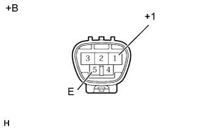
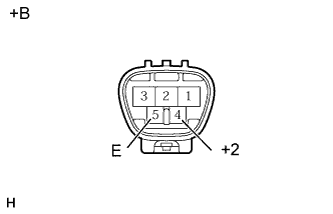
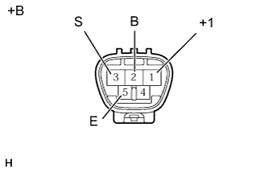
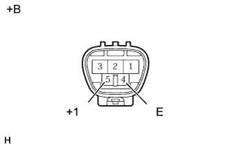
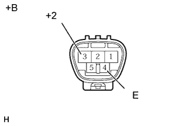
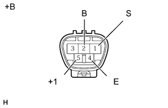

ЭЛЕКТРОДВИГАТЕЛЬ ПЕРЕДНЕГО СТЕКЛООЧИСТИТЕЛЯ > ПРОВЕРКА |
| 1. ПРОВЕРЬТЕ ЭЛЕКТРОДВИГАТЕЛЬ И ТЯГУ ПЕРЕДНЕГО СТЕКЛООЧИСТИТЕЛЯ (для моделей с левосторонним рулевым управлением) |
Нанесите метки на вал электродвигателя и корпус.
|  |
Проверьте работу на низких оборотах (LO).
Подсоедините положительный (+) вывод аккумуляторной батареи к контакту 1 (+1) разъема, а отрицательный (-) вывод – к контакту 5 (E) и убедитесь, что электродвигатель работает на низких оборотах (LO).
| *a | Устройство с неподсоединенным жгутом проводов (Электродвигатель и тяга стеклоочистителя ветрового стекла в сборе (для моделей с левосторонним рулевым управлением)) |
|  |
Проверьте работу на высоких оборотах (HI).
Подсоедините положительный (+) вывод аккумуляторной батареи к контакту 4 (+2) разъема, а отрицательный (-) вывод – к контакту 5 (E) и убедитесь, что электродвигатель работает на высоких оборотах (HI).
| *a | Устройство с неподсоединенным жгутом проводов (Электродвигатель и тяга стеклоочистителя ветрового стекла в сборе (для моделей с левосторонним рулевым управлением)) |
|  |
Проверьте работу в положении автоматического ограничения хода.
Подсоедините положительный (+) вывод аккумуляторной батареи к контакту 1 (+1), а отрицательный (-) вывод – к контакту 5 (E). Во время работы электродвигателя на низких оборотах (LO) отсоедините контакт 1 (+1) так, чтобы остановить электродвигатель стеклоочистителя в положении, не совпадающем с положением автоматического органичителя хода.
С помощью SST соедините контакты 3 (S) и 1 (+1). Затем подсоедините положительный (+) вывод аккумуляторной батареи к контакту 2 (В), а отрицательный (-) вывод - к контакту 5 (Е), чтобы возобновить работу электродвигателя на низкой скорости (LO).
Убедитесь, что электродвигатель останавливается автоматически в положении совмещения меток.
| *a | Устройство с неподсоединенным жгутом проводов (Электродвигатель и тяга стеклоочистителя ветрового стекла в сборе (для моделей с левосторонним рулевым управлением)) |
| 2. ПРОВЕРЬТЕ ЭЛЕКТРОДВИГАТЕЛЬ И ТЯГУ ПЕРЕДНЕГО СТЕКЛООЧИСТИТЕЛЯ (для моделей с правосторонним рулевым управлением) |
Нанесите метки на вал электродвигателя и корпус.
|  |
Проверьте работу на низких оборотах (LO).
Подсоедините положительный (+) вывод аккумуляторной батареи к контакту 5 (+1) разъема, а отрицательный (-) вывод – к контакту 4 (E) и убедитесь, что электродвигатель работает на низких оборотах (LO).
| *a | Устройство с неподсоединенным жгутом проводов (Электродвигатель и тяга стеклоочистителя ветрового стекла (для моделей с правосторонним рулевым управлением)) |
|  |
Проверьте работу на высоких оборотах (HI).
Подсоедините положительный (+) вывод аккумуляторной батареи к контакту 3 (+2) разъема, а отрицательный (-) вывод – к контакту 4 (E) и убедитесь, что электродвигатель работает на высоких оборотах (HI).
| *a | Устройство с неподсоединенным жгутом проводов (Электродвигатель и тяга стеклоочистителя ветрового стекла (для моделей с правосторонним рулевым управлением)) |
|  |
Проверьте работу в положении автоматического ограничения хода.
Connect the positive (+) lead of the battery - terminal 5 (+1) and the negative (-) lead - terminal 4 (E). Во время работы электродвигателя на низких оборотах (LO) отсоедините контакт 5 (+1) так, чтобы остановить электродвигатель стеклоочистителя в положении, не совпадающем с положением автоматического органичителя хода.
С помощью SST соедините контакты 1 (S) и 5 (+1). Затем подсоедините положительный (+) вывод аккумуляторной батареи к контакту 2 (В), а отрицательный (-) вывод - к контакту 4 (Е), чтобы возобновить работу электродвигателя на низкой скорости (LO).
Убедитесь, что электродвигатель останавливается автоматически в положении совмещения меток.
| *a | Устройство с неподсоединенным жгутом проводов (Электродвигатель и тяга стеклоочистителя ветрового стекла (для моделей с правосторонним рулевым управлением)) |